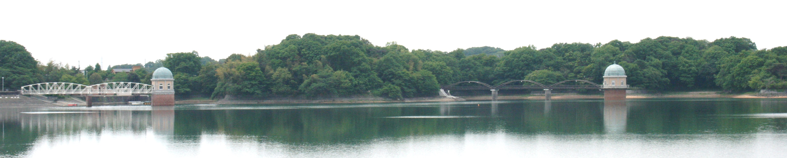

| 答案百花 光る文章講座 警察官・消防官
初級・上級 |
○ はじめに ① 「警視庁に描く私の夢」 ② 「滋賀県警に描く私の夢」 ③ 「東京消防庁に描く私の夢」 ④ 「福岡市消防局に描く私の夢」 ⑤ 「理想とする警察官像」 ⑥ 「消防官という職業」 ⑦ 「社会人としての自覚と責任」 ⑧ 「最近の世相と警察のあり方」 ⑨ 「消火と防火」 ⑩ 「自由と責任」 ⑪ 「生命の尊さ」 ⑫ 「東日本大震災の教訓」 |
|
公務員試験の作文（受講案内）
答案百花−総合案内
→公務員試験の作文（答案百花） →福祉・看護・介護の作文
→「時事用語」
作文打出の小づち
トップページ
○ はじめに
通信添削講座では推薦入試の受講者に次いで多いのが
警察官・消防官の受講者である。
ここ4〜5年の答案を積んでみると、１０ｃｍほどもある。
その中から、上記の12編を選んでみた。
選んでみると、現役高校生の答案より
大学生や社会人経験者のものが多くなっている。
中には上級受験者のものもある。
そこで、タイトルを「警察官・消防官の小論文・作文」とした。
社会人経験者を高校生と比べてみると、
パーソナリティーの、いわば厚みに違いが感じられる。
それゆえに、答案でも説得力に差がある。
高校生をはじめ、書くことを苦手としている諸君は
これらを読んで、
体験（事実）がどれだけ説得力の裏づけになっているかを
理解するようにしてほしい。
なお、講座では
「最初の答案」 → 「添削・講評」 → 「書き直し」
という順序で進めているが、
掲載に当たっては、そのどれかを省略している場合がある。
① 「警視庁に描く私の夢」
警視庁では実際にこの課題が出されている。
これが形を変えれば、
「警視庁に入ってしてみたいことを、あなたの体験を踏まえて述べなさい」
というふうな課題になる。
これは、取りも直さず「実績をもとに抱負を述べる」ということであり、
入社・入所試験の作文の基本型でもある。
もてる力や材料をフルに動員してかからなければならない。
そこで、当道場の講座では、これを
「○○県警に描く私の夢」というふうに一般化して
第一の、必修課題としている。
| はじめの答案 | 添削例・諸注意 |
| 最近、警察官を目差す人が増加する傾向にあり、人気職業の一つといえるようです。そのうち多くの人々は刑事希望者であると聞きますが、私の場合、以前軍務に就くことを考えていたので、警備部門に興味をもっています。要人警護を行うＳＰ、デモの警備や災害時に救助活動を行う機動隊、このような活動を行う警備部門で働きたいと思い、警察官を目差しています。 警視庁は日本一の、世界有数の規模を有し、首都東京を管轄区域としています。東京は政治、経済、文化、交通の中心地であり、国際都市でもあります。各国大使館が建ち並び、日本の主要な機関や施設が密集しています。私は１年ほど前まで東京に住んでいました。その頃の私の希望は軍務に就くことでした。冷戦が終結した現在、世界では逆に内戦や紛争が続発しています。東西の陣営下で抑えられていた民族、宗教、領土などの問題が紛争、内戦として勃発し、国際機関が介入しなければ、解決しない問題となっています。大国は自国民の人命重視のため、あまり介入したがらなくなっていますが、それでも多数の紛争地にＰＫＯ部隊を派遣しています。最初、私はこれらのＰＫＯ部隊に参加して、国際紛争を防止するために働きたいと思っていました。それは、どうしても起きてしまう紛争や衝突の解決に、微力ながらも自分の力を役立てたいという思いからでした。しかし、年齢的に考えて、軍務に就けるのは数年しかないと思い、その後の身の振り方を考えた末、あきらめることにしました。それまでの目標が薄らいだ頃に、あの佐賀の少年バスジャック事件が起きました。それまでにも少年犯罪について報道されていましたが、少年によるハイジャック事件が遂に起きてしまったという思いがしました。私は事件の経過をテレビの前で見守っていました。そして明け方、機動隊のＳＡＴ部隊による突入、そして事件の解決。この事件では、惜しくも犠牲者が出てしまいましたが、機動隊のＳＡＴ隊員たちは、事件解決のための最後の切り札として、立派に任務を成し遂げました。私はこの事件をテレビで見ていて、それまで海外世界や事件にばかり目を向けていましたが、国内にも目を向ければ、考えさせられる問題がたくさんあることに気づかされました。 このごろは、犯罪の低年齢化、短絡的で粗暴化の傾向が見られ、さらに国際化、ハイテクによる犯罪が急激な勢いで増加しています。また、警察官を目差す者には残念なことですが、警察組織による不祥事が何件も明らかにされています。内部者の犯罪はあくまでも隠蔽してしまうという、警察組織の体質改善には何年もかかるかもしれません。それでも、事件・事故が起これば、市民は警察を頼りにします。警察は治安の守りとしての信頼を取り戻す努力を一刻も早くすべきだと思います。その信頼を取り戻すために、私は警察官として最も働きがいのあると思われる警視庁でがんばりたいと思います。 （以上、約１２００字） |
← ……傾向にあり、そのうちの多くの人は ← ※ 中心であること、国際都市であること、それぞれの形態を整理する。ただし、警視庁や東京についての、この種の説明は不要。 ※ 「私は１年前……」で改行。 ← 解決しない事態 ← それでも、紛争地に多数のＰＫＯの部隊を…… ※ 「しかし、年齢的に……」の文を削除する。消極的な態度はマイナスになる。 その代わりに、むしろ、体力には自信があることをアピールする。スポーツでの実績があれば、それを示す。 ※ 「それまでの……」で改行して、つなぎを整える。 ← 寝ないで見ていると、明け方になって、機動隊のＳＡＴ部隊が突入し、事件が解決しました。 ＳＡＴ隊員は最後の切り札として突入を図り、立派に任務をはたしました。 ※ 「このごろは、……」の文を、「一方……、他方……」の形で整理してみよう。 ※ 警察批判ではなく、「夢」を描こう。 |
| 一、内容と構成 世界情勢の認識や世相の観察には確かなものがあるが、それを論じるあまり、警視庁に入って何をしたいかという「夢」がかすんでしまっている。 また、警察官になりたいという動機が消極的であることには注意を要する。 段落構成にも注意。添削例参照。 二、表記と表現 大きく減点されるほどの誤用はないが、挿入句が文の流れを妨げている。添削例参照。 三、評点 ○ ランク—Ｃ、得点—６０ |
| 書き直した答案 | 添削例・諸注意 |
| 最近、警察官を目差す人が増加する傾向にありそのうち多くの人々は刑事希望であると聞きます。私の場合、以前軍務に就くことを考えていたので、警備部門に興味をもっています。要人警護を行うＳＰか、デモの警備や災害時の救助活動を行う機動隊で働きたいと思っています。 私は１年ほど前まで東京に住んでいました。その頃の私の希望は軍務に就くことでした。冷戦が終結した現在、世界では逆に内戦や紛争が続発しています。東西の陣営下で抑えられていた民族、宗教、領土などの問題が噴き出し、国際機関が介入しなければ、解決しない事態となっています。大国は自国民の人命重視のため、あまり介入したがらなくなっていますが、それでも紛争地に多数のＰＫＯ部隊を派遣しています。最初、私はこれらのＰＫＯ部隊に参加して、国際紛争を防止するために働きたいと思っていました。それは、どうしても起きてしまう紛争や衝突の解決に、微力ながらも自分の力を役立てたいという思いからでした。軍隊での仕事には体力が要ることと思いますが、私は中学から高校ではサッカー部に所属し、大学でも同好会で続けていたので、スタミナには人一倍自信があります。 その頃、佐賀で少年バスジャック事件が起きました。それまでにも少年犯罪については報道でよく耳にしていましたが、少年によるハイジャック事件が遂に起きてしまったという思いがしました。私は事件の経過をテレビの前で見守っていました。寝ないで見ていると、明け方になって、機動隊のＳＡＴ部隊が突入し、事件が解決しました。この事件では、惜しくも犠牲者が出てしまいましたが、ＳＡＴ隊員たちは、事件解決のための最後の切り札として突入を図り、立派に任務を果たしました。私はこの事件を見ていて、それまで海外にばかり向けていた目を、国内にも向ければ、いろいろな問題があることに気づかされ、この事件をきっかけに、機動隊に入ろうと思いました。 このごろは、犯罪の低年齢化、短絡化、粗暴化の傾向が見られるため、このままでは少年犯罪が急増すると懸念されます。私は不測の事態に備えて格闘技も習い、日々の訓練に励みたいと思いますが、時間の許す限り、少年犯罪の原因や理由を調べ、家庭や学校とも連携してよい環境づくりを提案して、少年犯罪の撲滅にも取り組みたいと思います。 （以上、約１２００字） |
※ 警視庁のことや東京についての説明を削除してみて、どうだろう。 ○ これで、何とか強さをアピールできたね。この程度の自信があれば、結論部の「夢」にも現実味が出てくる。 ◎ 課題に合っている。合格答案だ。 |
点数をつければ、Ａランク、８５点といったところか。
もどる
「警視庁に描く私の夢」は、講座の必修課題として
「○○県警に描く私の夢」ともなる。
| はじめの答案 | 添削例・諸注意 |
| 滋賀県と京都府の県境、比叡山の麓にある新興住宅街、大津市比叡平団地では、昨年ごろから空き巣による被害が増え始めた。隣接した３軒が連続して被害に遭ったり、同じ家が３回も標的になることもあった。昨年７月、同団地の自治会役員ら約１００人が中心となり、自主防犯団体を立ち上げた。月に２回、そろいのジャンパーや帽子を身につけ、夜間の防犯パトロールに当たった。今年１月には、青色回転灯を装着した自家用車によるパトロールも開始した。近畿では初の試みとなる。 窃盗は侵入盗と非侵入盗に大別できる。侵入盗は主に、第三者が出入りできない屋内、住宅や事務所などで行われる窃盗行為で、空き巣や忍び込みなどである。非侵入盗は街頭など、大勢の人が行き交う中で行われる窃盗行為で、乗り物盗などがそれに当たる。両者に共通しているのは、いずれも「人の目を盗んで行われる」点である。これは窃盗行為の特徴でもあるが、視点を変えれば、「人の目」は窃盗の防止に大きな役割を果たしているということである。 近年、相次ぐ空き巣や乗り物盗などに対応するため、各地で自主防犯団体を組織する動きが広がっている。団体の活動は侵入盗や非侵入盗に対して「目」の役割を果たし、犯罪の未然防止の期待が高まる。 昨年の県内の刑法犯認知件数は２４８３１件で、２年連続の減少となったが、このうち、窃盗が占める割合は全体の約７割と、依然として高い割合を占めている。窃盗による県民の被害は大きく、その不安には計り知れないものがある。 私は警察官になったら、窃盗による被害を減らすため、次の２つを広めていきたいと思う。１つ目は自主防犯団体によるパトロール、２つ目は心がけの言葉、「あなたの目が盗まれる時、それはあなたの大切なものが盗まれる時」。日頃の心がけが大事である。 （以上、約８００字） |
← 標的になったりすることも ※ 「第三者が出入りできない屋内」を削除する。 ← ……などがある。 ※ この段落の内容は省略してもよい。入れるなら、第２段落の冒頭へ。 ← 窃盗が占める割合は……依然として高い。 ← １つは〜、もう１つは〜。 ※ 標語は 「あなたの目が盗まれる時、あなたの大切なものが盗まれる」ではどうか。 結論部では「夢」を明確にする。 |
「自主防犯団体」に焦点を合わせているのがよい。.
論述も簡潔に仕立てやすい。
「人の目」の役割に目をつけたのもユニークである。
Ｂランクの８０点。
| 書き直した答案 | 添削例・諸注意 |
| 滋賀県と京都府の府県境、比叡山の麓にある新興住宅街、大津市比叡平団地では、昨年ごろから空き巣による被害が増え始めた。隣接した３軒が連続して被害に遭ったり、同じ家が３回も標的になったりすることもあった。昨年７月、同団地の自治会役員ら約１００人が中心となり、自主防犯団体を立ち上げた。月に２回、そろいのジャンパーや帽子を身につけ、夜間の防犯パトロールに当たった。今年１月には、青色回転灯を装着した自家用車によるパトロールも開始した。近畿では初の試みとなる。 昨年の県内の刑法犯認知件数は２４８３１件で、このうち、窃盗が占める割合は全体の約７割と高い。窃盗は侵入盗と非侵入盗に大別できる。侵入盗は、主に住宅や事務所などの屋内で行われる窃盗行為で、空き巣や忍び込みなどがある。非侵入盗は、街頭など、大勢の人が行き交う中で行われる窃盗行為で、乗り物盗などがそれに当たる。両者に共通しているのは、いずれも「人の目を盗んで行われる」点である。これは窃盗行為の特徴であるが、視点を変えれば、「人の目」は窃盗の防止に大きな役割を果たしているということである。 近年、相次ぐ空き巣や乗り物盗などに対応するため、各地で自主防犯団体を組織する動きが広がっている。団体の活動は侵入盗や非侵入盗に対して「目」の役割を果たし、犯罪の未然防止の期待が高まる。 私は警察官になったら、窃盗による被害を減らすため、次の２つを広めていきたいと思う。１つは自主防犯団体によるパトロールの強化で、もう１つは「心がけ」のポスターを作ることである。ポスターの標語は「あなたの目が盗まれる時、あなたの大切なものが盗まれる」とする。日頃の心がけが大事であることを広く訴え、防犯活動に努めたい。 （以上、約８００字） |
← 犯罪の未然防止に期待が高まっている。 |
これで、「夢」も具体的になった。実現も可能であろう。
この答案を書いたＫさんは、精力的にいろいろな答案を書いていた。
ここでは、
その中から「光る」事例を組み合わせて一つの答案に仕上げた例を紹介しよう。
| はじめの答案 | 添削例・諸注意 |
| 私は高校時代、消防官の仕事は火事を消すことだと単純に考えていました。ところが、ある時、テレビで奇跡の救助やレスキュー隊の厳しい訓練などを見て、消防官の仕事は火事を消すだけではなく、命をはって人を助け、そのために厳しい訓練をするのだということを知って、何と男らしい仕事なんだと思い、憧れました。 大学に入って将来のことを考えたとき、「働く」ということを真剣に考えました。そして、消防官という仕事が思い浮かんできました。消防官の仕事は、普通の会社員の仕事とはまったく違うと思いました。会社員は会社に利益をもたらすことを目標として働いています。会社の利益を第一に考えているので、決してすべての会社が社会のために役立っているとはいえません。しかし、消防官という仕事は、火事の時には人を助けるために火の中に入っていったり、海でおぼれている人を救助にいったりと、人のため、社会のために役立つ仕事だと思います。とても勇気のいる仕事ですが、そのために厳しい訓練をして、自分を成長させてくれます。これを知ったとき、改めて、なんて男らしい素晴らしい仕事なんだろう、これこそが自分の職業とするにふさわしい、消防官になって自分を「男の中の男」にしようと思いました。 消防官は体力、根性、勇気の要る仕事だと思います。消防官にはこの３つが必須だと思います。私は体育大学の学生なので、体力には自信があり、体を動かすことには慣れています。また、浪人時代には新聞奨学生として、朝刊、夕刊を配達しながら予備校に通っていました。大変つらい時期でしたが、大学に行きたいという気持ちが強く、目標に向かって毎日を過ごしていたので、耐えられたのだと思います。浪人生活で得たのは、やればできるということが分かったことと、根性、精神力がついたことです。「男の中の男」になるにはまだまだですが、体力と精神力には自信があるので、消防官は私に合っている仕事だと思います。消防官になって、社会のため人のために働いていきたいと思います。現場に出て行けない歳になれば、消防学校の先生になりたいと思います。希望をもって入ってくる生徒たちに、自分の体験したことを話し、消防官というのがどれだけ素晴らしい仕事であるかを伝えていきたいと思います。東京消防庁には私の夢がいっぱいあります。ここで自分自身を磨いて夢を実現したという思いでいっぱいです。 （以上、約1,000字） |
← ……命をはって人を助けるのが主で、そのために…… ← ……考えました。すると、高校時代の憧れから、すぐに消防官の仕事が思い浮かんで ← 必ずしもすべての会社が……役立っているとは…… ← ……いえません。これに対し、 ← 自分を成長させてもくれます。考えがここに及んだとき、 ※ 「消防官になって」で改行し、「消防学校の先生になりたいと思います」の後に、「そのために、教職課程を履修し、教員免許も取りました」と入れる。 |
| 私は大学３年の夏、日本赤十字社の「水上安全法コース」という、ライフ・セービングについての講習を受けた。日ごろ、テレビや雑誌で救出劇やレスキュー隊の訓練などを興味をもって見ていたので、わくわくしながら参加した。 講習は３泊４日の日程で、講義と実技から成っていた。約２時間半の講義と実技が午前と午後にあった。講義では応急手当の方法についての話や救助に関する講師の体験談などがあり、実技ではプールでの体力トレーニングや救助法の実習、海での溺者救助の実践演習があった。 海の演習では、溺者の所へ早く泳ぎ着き、その人を立ち泳ぎで砂浜まで引っ張ってくる演習が主だった。このため、遠泳でスタミナを養ったり、人を背負って下ろすという訓練を繰り返したりした。この訓練では意識がもうろうとすることもあり、夕食後は文字どおりバタン、キュウとなったが、快い睡眠がとれた。 実技の後に講義があるときは睡魔にも襲われたが、興味の尽きない大事な話ばかりだったので、一生懸命頭にたたき込んだ。お陰で、最終日の試験では見事に合格した。実に充実した４日間だった。 |
| 書き直した答案 | 添削例・諸注意 |
| 私は高校時代、消防官の仕事は火事を消すことだと単純に考えていました。ところが、ある時、テレビで奇跡の救助やレスキュー隊の厳しい訓練などを見て、消防官の仕事は火事を消すだけではなく、命をはって人を助け、そのために厳しい訓練をするのだということを知って、何と男らしい仕事なんだと思い、憧れました。 大学３年生の夏、日本赤十字社の「水上安全法コース」という、ライフ・セービングについての講習を受けました。憧れの世界のことなので、わくわくしながら参加ましした。講習は３泊４日の日程で、午前と午後に約２時間半の講義と実技がありました。講義では応急手当の方法についての話や救助に関する講師の体験談などがあり、実技ではプールでの体力トレーニングや救助法の実習、海での溺者救助の実践演習がありました。海の演習では、溺者の所へ早く泳ぎ着き、その人を立ち泳ぎで砂浜まで引っ張ってくる演習が主でした。このため、遠泳でスタミナを養ったり、人を背負って下ろすという訓練を繰り返したりしました。この訓練では意識がもうろうとすることもあり、夕食後は文字どおりバタン、キュウとなりましたが、快い睡眠がとれました。実技の後に講義があるときは睡魔にも襲われましたが、興味の尽きない大事な話ばかりだったので、一生懸命頭にたたき込みましだ。お陰で、最終日の試験では見事に合格し、実に充実した４日間でした。 消防官は体力、根性、勇気の要る仕事だと思いますが、私は体育大学の学生なので、体力には自信があり、体を動かすことには慣れています。また、浪人時代には新聞奨学生として、朝刊、夕刊を配達しながら予備校に通っていました。大変不安な時期でしたが、大学に行きたいという気持ちが強く、目標に向かって毎日を過ごしていたので、つらさにも耐えられたのだと思います。浪人生活で得たのは、やればできるということが分かったことと、根性、精神力がついたことです。このように、体力と精神力には自信があるので、消防官は私に合っている仕事だと思います。 消防官になって、社会のため人のために働いていきたいと思います。現場に出て行けない歳になれば、消防学校の先生になりたいと思います。そのために、教職課程を履修し、教員免許も取りました。希望をもって入ってくる学生たちに、自分の体験したことを話し、消防官というのがどれだけ素晴らしい仕事であるかを伝えていきたいと思います。東京消防庁には私の夢がいっぱいあります。ここで自分自身を磨いて夢を実現したという思いでいっぱいです。 （以上、約１１００字） |
◎ 4段落の内容が、見事に1段落に収まっている。 また、文末表現も、常体から敬体に直して、統一されている。 |
実績がすばらしいので、夢にも現実味がある。
もどる
| はじめの答案 | 添削例・諸注意 |
| 私は福岡市消防局で、日本一安心・安全なまちを、市民とともに作っていきたい。災害や事故の態様がますます複雑多様化・大規模化している今日、危機管理の重要性が叫ばれているが、一方で、日々の生活に追われて災害に対する準備がおろそかになりがちなのも事実である。このような状況において、市民の防災意識を向上させるには、消防局はどのように取り組んでいくべきであろうか。私は、積極的な防災教育・啓発活動が大切であると考える。 私は今までに、防災に関わるボランティア団体で指導員として活動を行ってきた。「福岡応急手当て普及の会」、「福岡着衣泳会」という団体だ。「福岡応急手当て普及の会」では、福岡市とその近郊を活動地域とし、応急手当ての知識と技術を広めることを目的に様々な所へ出向いて講習会を開催している。「救われるべき命」が救われるには、一人でも多くの救助者が応急手当てをためらうことなく行うことが重要だ。なぜなら、救急車はすぐに現場には来られないからだ。応急手当てを行える人が周りに多くいることが安心・安全なまちづくりの核になるのだ。「福岡着衣泳会」は、福岡県内外を問わず、着衣泳の正しい知識と技術を広めることを目的として講習会を開催している。水難事故で亡くなった人の８割近くは服を着た状態だ。着衣状態で水難事故に遭うと、生還する確率は低くなる。命を守る着衣泳を行うことで、水難事故から自分自身の生命を守ることになるのだ。 私は、各人の防災意識を高め、普及させる消防官を目差したいと考えている。災害にあった人々を助けることと同様に重要なことだと考えるからだ。私は福岡市消防局で、通常事務を遂行することはもちろんのこと、非番の日を利用し、今までの経験を生かして、積極的に活動していきたい。 （以上、約８００字） |
◎ 「まち」とかながきにしてあるのは後の「まちづくり」と合わせるためなのかな。 ← ……叫ばれる一方で、日々の ※ あとのほうは「普及の会」でよい。 ← ……を目的に、様々な所へ ← すぐには現場に来られない ← 「着衣泳会｝でよい。 ← 積極的に防災教育・啓発活動を行っていきたい。 |
体験にもとづいて素晴らしい夢が描かれている。
構成もよく、文章にもほとんど直すところがない。
これだけでも、
評点をつければ、Ａランク９５点といったところである。
⑤ 「理想とする警察官像」
「理想」は「夢」でもあり、夢にもいろいろある。
これはその一つである。
| はじめの答案 | 添削例・諸注意 |
| 私が子供の頃、近所の道路に設置してあるロードミラーが壊れているのを見つけ、交番の警察官の方にそれを言いにいったことがある。その方がとても親切に応対して下さったのを覚えている。後日、ロードミラーは修理されていたが、今思えばあれは市役所か国土交通省の仕事ではないだろうかと思う。当時小学生だった私の頭には「とりあえず交番」くらいしか思い浮かばなかった。しかし言い換えると小学生でも「なにかあったらとりあえず交番」と思うほど交番とは地域に溶け込んでいる存在だと思う。 私の住んでいる町では今、スプレー事件というものが起きている。通行人に催涙スプレーをかけるという事件である。そんな不可解な事件や重大事故など、仕事は多種多様だと思う。そういう仕事も、もちろん大切だと思うが、私の理想とする警察官は、「町のお巡りさん」である。「警察官」よりも「お巡りさん」の方がなんとなく親近感がある。わたしは警察官よりもお巡りさんになりたい。町の人々が気軽にあいさつを交わし、「ロードミラーが壊れてる」と近所の子供たちに言われる、そんな親近感と頼もしさを兼ね備えたお巡りさんが私の理想とする警察官である。 （以上、約５００字） |
← 交番に言いに行ったことがある。警察官はとても親切に応対してくださった。 ← しかし、これは、裏を返せば、「何かあったら交番へ」と、小学生でも思うほど、地域の人には頼りになる存在だったからなのだろう。 ← そんな奇妙な事件や殺人事件などにも取り組まなければならないので、警察官の仕事は雑多で、大変だと思う。 ※ 「そういう仕事も」で改行。 ← 子供たちに言ってもらえるような |
素朴な夢である。しかし、
これが警察官の仕事の原点なのであろう。
| 書き直した答案 | 添削例・諸注意 |
| 私が小学生の頃、近所の道路のロードミラーが壊れているのを見つけ、交番にそれを言いにいったことがある。警察官はとても親切に応対して下さった。後日、ロードミラーは修理されていた。今思えば、あれは市役所か国土交通省の仕事ではないかと思うが、当時の私の頭には「とりあえず交番」くらいしか思い浮かばなかったのだ。これは、しかし、裏を返せば、小学生でも「なにかあったら交番」と思うほど、交番は地域に溶け込んでいたからなのだろう。 私の住んでいる町では今、スプレー事件が起きている。通行人に通りすがりに催涙スプレーをかけるという事件である。そんな奇妙な事件や殺人などの重大事件にも取り組まなければならないので、警察官の仕事は雑多で大変だと思う。 そういう仕事に取り組むのは、もちろん大切だと思うが、私の理想とする警察官は、「町のお巡りさん」である。「警察官」よりも「お巡りさん」のほうがなんとなく親近感がある。わたしは「警察官」よりも「お巡りさん」になりたい。町の人々と気軽にあいさつを交わし、「ロードミラーが壊れてる」と子供たちに言ってもらえるような、そんな親近感と頼もしさを兼ね備えたお巡りさんが、私の理想とする警察官である。 （以上、約５００字） |
※ 「ロードミラー」に代えて、「子供たちがどんな些細なことでも気軽に知らせに来てくれるような、」とでもするとよいか。 |
このお巡りさんは優しい人であろう。
しかし、強い人でなければならない。
そうでなければ、地域の人々の信頼を得られない。
お巡りさんになるのは大変なことなのだ。
⑥ 「消防官という職業」
これはいったいどんな職業だと、人は考えているだろうか。
これについて、卓抜の答案がある。
既に著書に収載しているため、ここに再録はできない。
本屋さんへ足を運んでもらわなければならないが、
興味のある方はこちらへ。
『作文試験必勝のパターン』ー第六章「例文集」…四、「職業と私」参照。
⑦ 「長所の活用と警察官の仕事」
⑧ 「最近の世相と警察官の仕事」
| はじめの答案 | 添削例・諸注意 |
| 火災原因で一番多いのは放火である。火災を減少させるためには、放火させないまちづくりが重要だ。そのためには、地域の自主防災の確立を図らなければならない。神戸市では阪神・淡路大震災の教訓として、市民、事業所、行政とが協力し合って、福祉活動に取り組む「防災福祉コミュニティ」を結成した。震災で得た教訓を風化させることなく、地域の防災活動、福祉活動に取り組んでいる。このような積極的な防災教育・啓発活動を行うことは市民の防災意識を高め放火をさせないまちづくりにつながると考えられる。 地域において住民が安心して暮らせる街とは、火災による被害を最小限に抑えることのできる体制、及び万一火災が発生した時に迅速な消火活動を行うことのできる体制が常に整っている街であると考える。それは、消防が努力しただけでは達成できるものではなく、地域住民の協力も必要になると思うが、防災のプロである消防がリーダーシップをとって、「火を出させない」ということを徹底させなければならない。消防官は災害の恐ろしさを知っている数少ない職業の一つである。その消防官が火災の恐ろしさを伝え、訴えかけていくことで人々の防災に対する意識を変えていくことができると考える。 また、火災の発生に対して、迅速な対応をとるための地域住民との連携も重要である。緊急時においてすぐに現場に駆けつけて対応することは消防としての中核を担う業務であると思うが、消防官が現場に到着するまでに、住民自身でも対応をとることで被害の大きさは変わってくると思う。そのために、防災のプロとして身に付けた知識や技術を住民に伝え、緊急時に少しでも冷静な判断ができるようにしていく必要があると考える。私はこのように、各人の防災意識を高め、普及させるために力を尽くす消防官を目差したいと考えている。災害にあった人々を助けることと同様に重要なことだと考えるからだ。通常業務を遂行することはもちろんのこと、非番の日も利用して防災活動に積極的に取り組んでいきたい。 （以上、約８００字） |
…… 火災が発生しても（※「万一」に呼応させる）。 ← 必要になる。ただし、防災のプロ ※ 火災の恐ろしさはたいていの人が知っているとおもわれるので、「消防官は」以下の２文には無理がある。 ※ 「また」以下のことがらは前の段落につないでまとめるほうがよい。 ← ……対応することは消防官の任務であると思うが、 ← 住民自身も対応することで被害を最小限にくいとめることができると思う。 ※ 「私はこのように……」で改行する。 |
非常にすぐれた考えであるが、中ほどの話に現実認識のズレがある。
Ｂランク、７０点。
| 書き直した答案 | 添削例・諸注意 |
| 火災原因で一番多いのは放火である。火災を減少させるためには、放火させないまちづくりが重要だ。そのためには、地域の自主防災の確立を図らなければならない。神戸市では阪神・淡路大震災の教訓として、市民、事業所、行政とが協力し合って、福祉活動に取り組む「防災福祉コミュニティ」を結成した。震災で得た教訓を風化させることなく、地域の防災活動、福祉活動に取り組んでいる。このような積極的な防災教育・啓発活動を行うことは市民の防災意識を高め、放火をさせないまちづくりにつながると考えられる。 地域において住民が安心して暮らせる街とは、火災による被害を最小限に抑えることのできる体制、及び万一火災が発生しても、迅速な消火活動を行うことのできる体制が常に整っている街であると考える。それは、消防が努力しただけでは達成できるものではなく、地域住民の協力も必要になる。ただし、防災のプロである消防がリーダーシップをとって、「火を出させない」ということを徹底させなければならない。また、火災の発生に対して、迅速な対応をとるための地域住民との連携も重要である。緊急時においてすぐに現場に駆けつけて対応することは消防官の任務であると思うが、消防官が現場に到着するまでに、住民自身も対応することで被害を最小限にくいとめることができると思う。そのために、防災のプロとして身に付けた知識や技術を住民に伝え、緊急時に少しでも冷静な判断ができるようにしていく必要があると考える。 私はこのように、各人の防災意識を高め、普及させるために力を尽くす消防官を目差したいと考えている。災害にあった人々を助けることと同様に重要なことだと考えるからだ。通常業務を遂行することはもちろんのこと、非番の日も利用して防災活動に積極的に取り組んでいきたい。 （以上、約８００字） |
← ……できる体制、および、万一火災が…… ※ 接続詞（及び）はふつうかな書きとする。ただし、間違いではなく、減点の対象にもならない。 ← ……知識や技術を常日頃から住民に…… |
これで、Ａランク９５点となった。
| はじめの答案 | 添削例・諸注意 |
| 自由であることと責任があることとは一見何の関係もないように思えますが、これらは表裏の関係にあるものと思います。 自由というものには誰もが憧れ、そして、心地よさを感じるでしょう。他からの束縛を受けず、自分の思うままに行動できることは、とても素晴らしいことです。しかし、この自由を自分の好き勝手にできるとの意味だけに解釈している人もいるのではないでしょうか。いじめや援助交際、暴走族などの行為はそういう人たちの例で、その中でも交通事故などを起こしかねない暴走族などは、特に間違った解釈をしている人達でしょう。以前、東京では暴走族に前をふさがれた人が、クラクションを鳴らしただけで暴行を受け死亡してしまったという事件がありました。彼らは自分達の暴走行為をどう考えているのでしょうか。 誰でもある年齢に達すれば、運転免許を取得することが可能で、楽しいドライブをすることができます。しかし、楽しいだけではなく、事故を起こす可能性もあるので、それを防ぐための交通ルールが決められています。安全、円滑な交通社会を守るためにも、交通ルールを守る義務、責任があります。責任をもって行動することが本当の自由であり、好き勝手とは違う点だと思います。暴走族の者達は、運転できるという自由だけを使い、他者への迷惑、事故防止のためのルールを守るという責任を忘れているのではないでしょうか。 自由と責任は表裏の関係にあり、切り離せないものであると思います。自由だけではなく、責任の意義も忘れずにいたいと思います。 （以上、約７００字） |
← この自由を、自分の好き勝手にできるという意味に、勝手に解釈して…… ← 自分達の行為をどう正当化している…… ← しかし、楽しい反面、事故を起こす可能性もあり、（※ このあとに、次のようなことを補っておく）場合によっては、自分ばかりでなく、他の人を巻き込んで、ケガをさせたり死亡させたりすることになりかねません。それを防ぐために…… ← ……責任の自覚がないと言えます。 ※ 末尾の段落の冒頭に、「権利は義務の履行が伴って初めて権利となるのと同じように、自由は責任を伴って初めて自由が得られるのであって、」を補っておく。また、末尾の文は次のように、現実味を加えておく。 ← 私たちが生きていく上では、自由を求めるなら、それだけ責任を自覚しておきたいものです。 |
自由と責任の関係をかなりよく把握している。
暴走族を例にしているのがよい。
字数が足りないので、説明を補ってそれをカバーしよう。。
| 書き直した答案 | 添削例・諸注意 |
| 自由であることと責任があることとは、一見何の関係もないように思えますが、これらは表裏の関係にあるものと思います。 自由というものには誰もが憧れ、そして、心地よさを感じるでしょう。他からの束縛を受けず、自分の思うままに行動できることは、とても素晴らしいことです。しかし、この自由を、自分の好き勝手にできるという意味に、勝手に解釈している人もいるのではないでしょうか。いじめや援助交際、暴走族などの行為はそういう人たちの例で、その中でも交通事故を起こしかねない暴走族などは、特に間違った解釈をしている人達でしょう。以前東京で、暴走族に前をふさがれた人が、クラクションを鳴らしただけで暴行を受けて死亡してしまったという事件がありました。彼らは自分達の行為をどう正当化しているのでしょうか。 誰でもある年齢に達すれば、運転免許を取得することが可能で、楽しいドライブをすることができます。しかし、楽しい反面、、事故を起こす可能性もあり、場合によっては、自分ばかりでなく、他の人を巻き込んで、ケガをさせたり死亡させたりすることになりかねません。それを防ぐために交通ルールが決められています。私たちは、安全、円滑な社会生活を送るためにも、交通ルールを守る義務、責任があります。責任をもって行動することが本当の自由であり、好き勝手とは違う点だと思います。暴走族の者達は、運転できるという自由だけを使い、他者への迷惑を考えず、事故防止のルールを守るという責任をの自覚に欠けると言えます。 権利は義務の履行が伴って初めて権利となるのと同じように、自由は責任を伴って初めて自由が得られるのであって、自由と責任は表裏の関係にあり、切り離せないものであると思います。私たちが生きていく上では、自由を求めるなら、それだけ責任を自覚しておきたいものです。 （以上、約８００字） |
◎ 暴走族を例に取り上げ、これをもとに話を進めているので、理屈に陥らないで済んでいるのだね。 |
「自由」の問題について、
『論作文の奥義』では古今東西の思想を概観して、
コンパクトに論じている。
興味のある方は、こちらの案内へどうぞ。
しばらくお待ちください。
ご意見・ご希望・ご質問はこちらへ
